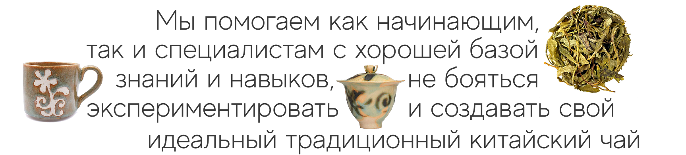
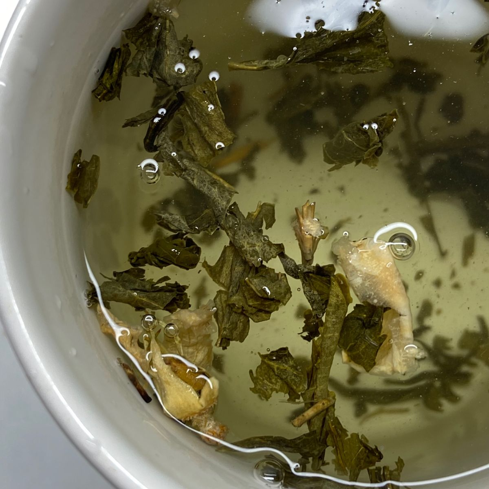
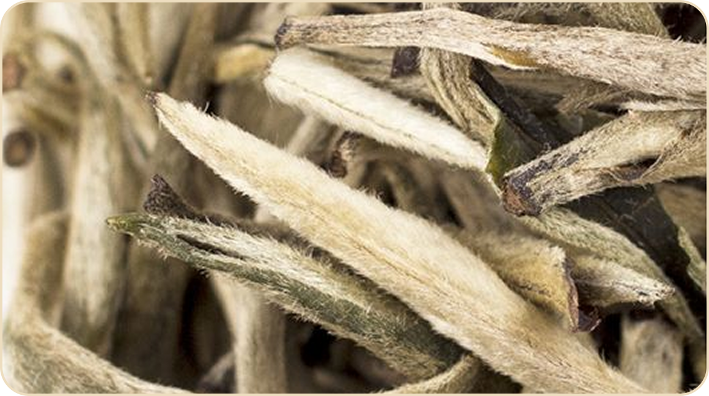
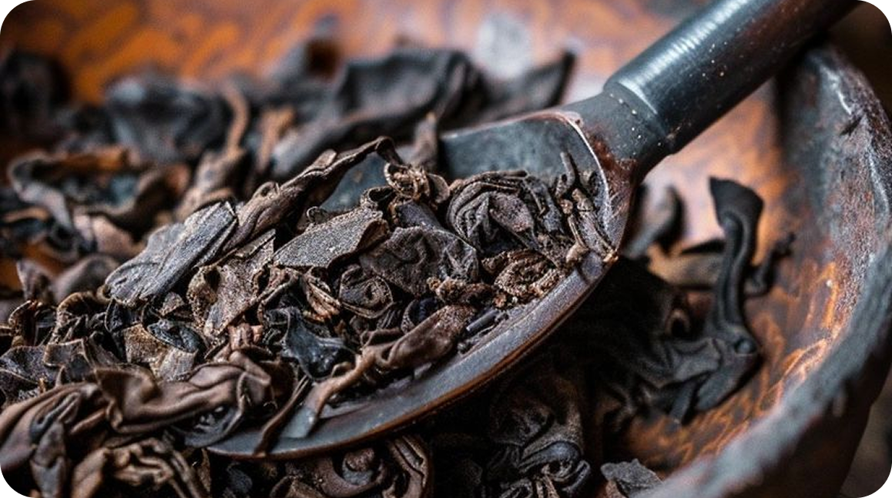
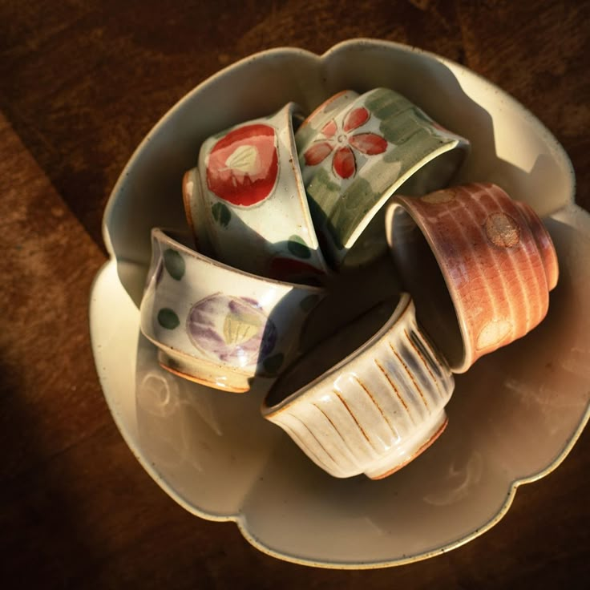
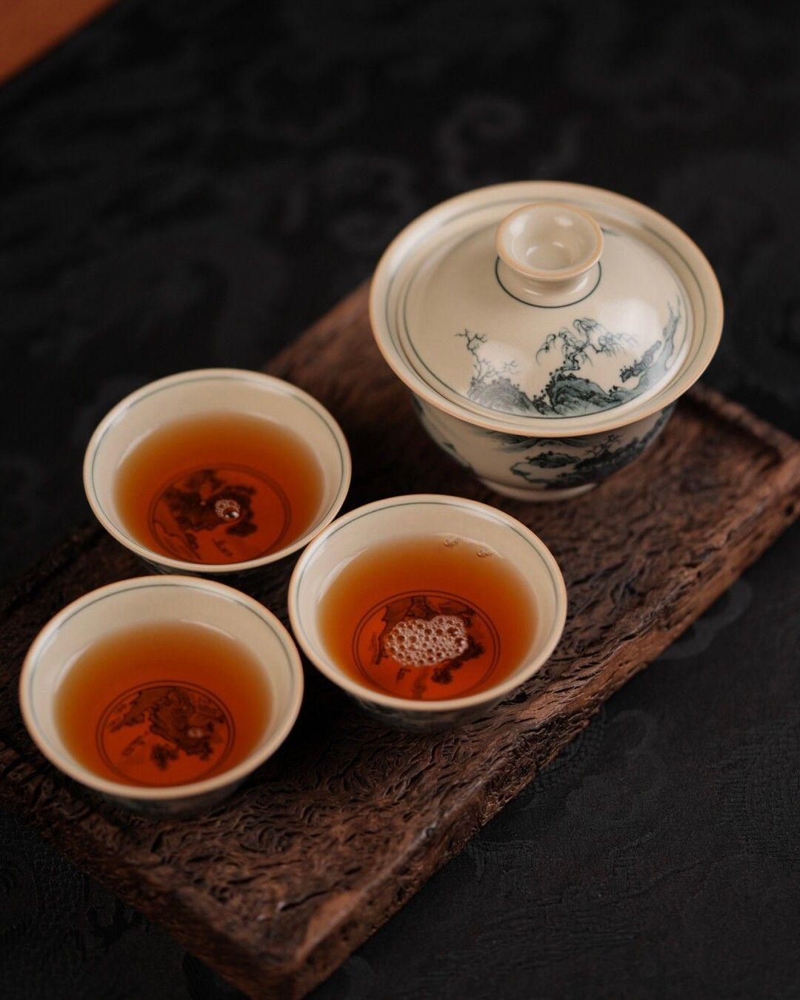
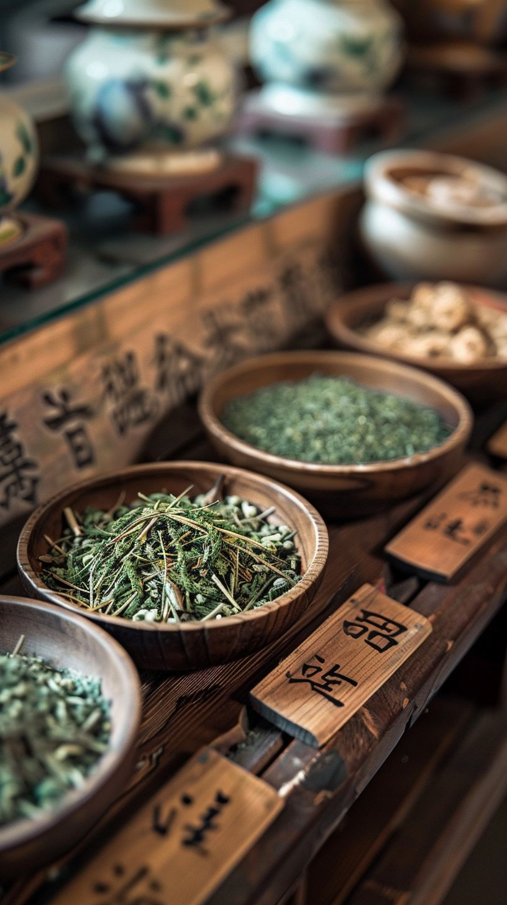
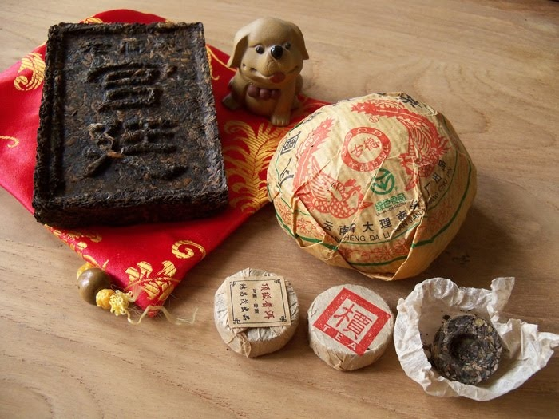

Почему Кудин пьют во время простуды и как избежать горечи при заваривании напитка?
20 ноября 2025

Медиа, полностью посвященное миру китайского чая

Узнай, почему изначально Дунтинь Билочунь назывался Ся Шань Жень Сян (невероятный аромат)

Рассказываем рецепт и способы приготовления белого традиционного китайского чая

Делимся свойствами и нотами аромата самого знаменитого сорта чая в мире

Главный выбор, который вам предстоит сделать перед покупкой чайного сервиза, — это предпочитаете ли вы заваривать чай в чайнике или в гайване. Наш выбор начинается именно с этих двух предметов, поскольку они являются главными, а все остальные элементы должны гармонировать с ними.
Читать больше
Какой температурой воды нужно заваривать Лю Бао, чтобы он не горчил и ароматно раскрылся?

С чего начать изучение традиционного китайского чаепития и что купить для домашнего опыта?
Почему не получается приготовить молочный улун Най Сян, что делаю не так?

Не получается найти подходящий чайный сервиз для приготовления Белого китайского чая...
